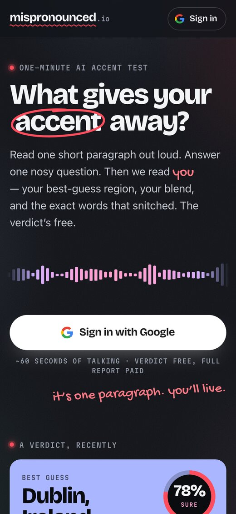
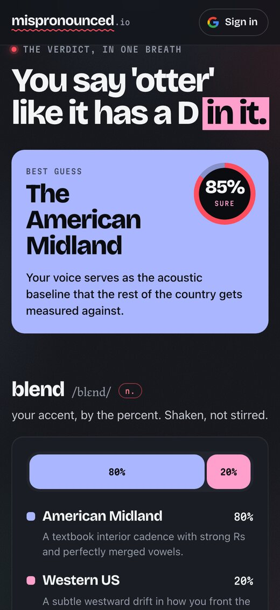
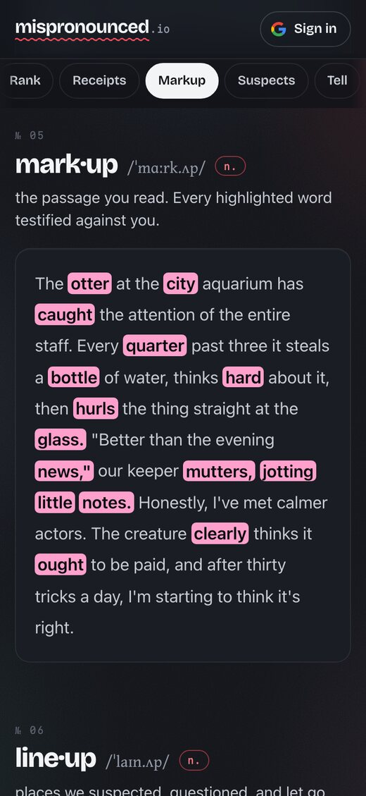
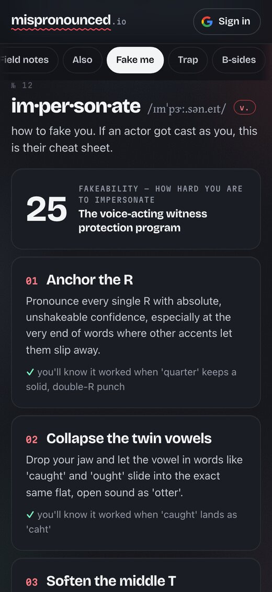
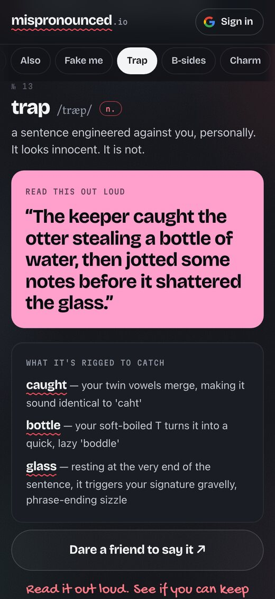
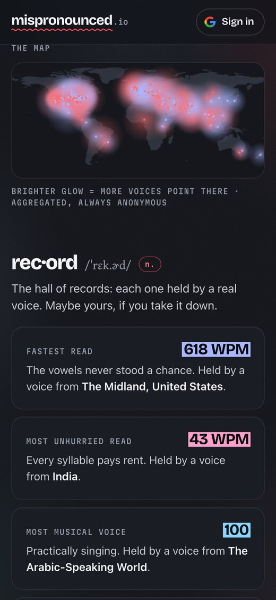

What gives your accent away? Read one short paragraph, answer one nosy question, and an AI with very good ears tells you — a best-guess region, your blend, and the exact words that snitched.
You read one short paragraph out loud. It looks innocent; every line is packed with the vowel traps that split one region from another. Then you answer one nosy question off the cuff, because reading voices behave and rambling voices confess.
The verdict comes back on bright cards made to be screenshotted: a best-guess place, with a confidence score it will defend, one line your group chat will quote back at you, and the word that snitched first. The verdict is free.
$3 unlocks the full file for that run: your blend by the percent, the passage marked up with every word that testified, a stat sheet ranked against every voice it has heard, the places it suspected and cleared, famous voices in your key, and field notes with a nerd layer underneath.
Then the season-two pages, mined from the same notes: an impersonation kit (an actor's cheat sheet for faking you), a trap sentence rigged against your habits to dare a friend with, b-sides (your voice as a drink, as weather, as a car), and a charm file — the page of the report that likes you back.






Listen first, structure second. One model hears the raw audio and writes a free-form phonetician's notebook; a second, text-only pass turns the notebook into the report.
Every run lands on one map, anonymous by construction — no names, no audio, just where the vowels pointed. Plus a Hall of Records: fastest read, thickest accent, filler-word champion.
Every verdict gets a link and a share card: the one-liner, the region, the blend. First name only, no audio, unlisted. The report stays yours; the card does the bragging.
This started as a curiosity about what these models can do with raw audio. The surprise was how much the shape of the prompt mattered. Ask the model to fill in a form while it listens and it goes half-deaf; let it ramble in a notebook first, then structure that notebook in a second pass, and it hears everything. It never transcribes, either. A transcript throws away the accent, which is the whole signal.
The hard part turned out to be honesty, not hearing. On a light accent the model picks a language on a hunch, then hears the sounds that support it — and a city stacked on that hunch reads as precision it doesn't have. Seven prompt revisions didn't fix it. What shipped is a rule: the report can't turn a country-level finding into a city. It's a very good ear, not a passport check, and it says so.
Money got simpler the same way. It launched with a tip jar, then grew credits, three-packs and pass links. In August I deleted all of it for one rule: $3 unlocks your run, and you can't start a new one while an unpaid one is sitting there. That makes the first run free without a special case. Three hundred lines lighter, and nothing to explain.
It's still the app I most like showing someone. Everyone wants to know what their voice gives away. Read the paragraph. Find out.
Public app, on a phone or a laptop. Sign in with Google, allow the mic, and talk for about a minute. The verdict is free; $3 unlocks the full file for that run. Your recording and email stay private.
Not ready to talk? The sample report is my own voice with every page unlocked, and the atlas shows everyone else's.